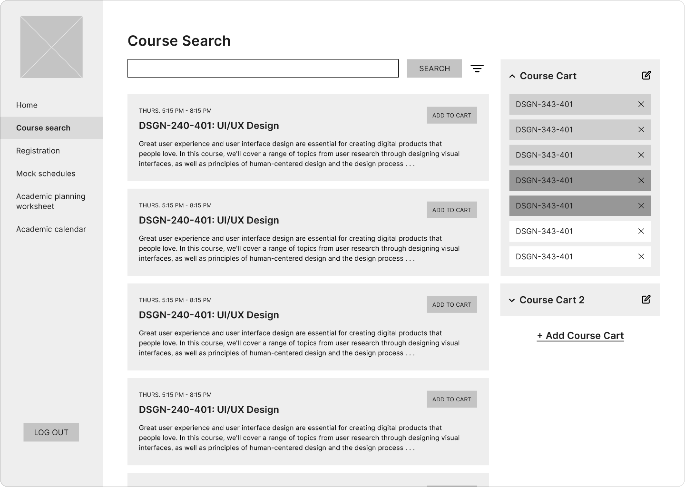
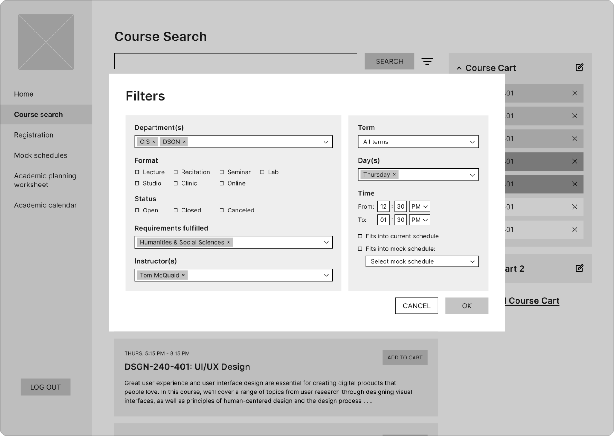
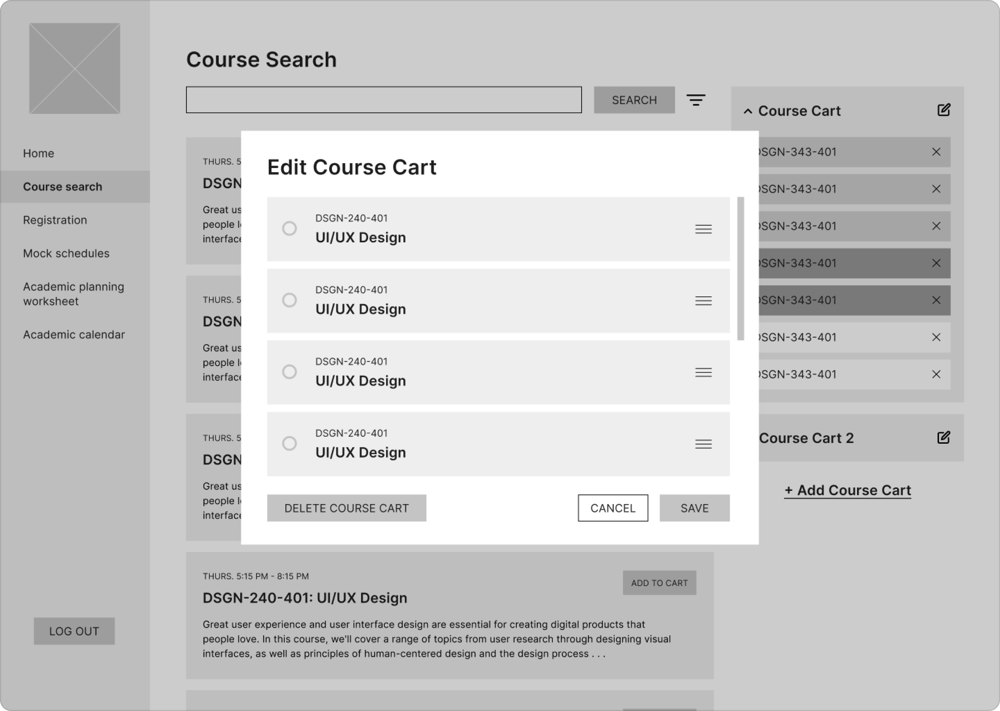
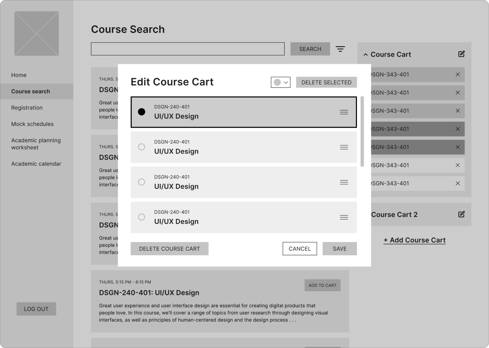

I approached this problem by identifying issues with the existing PennInTouch website. These issues can be summarized in two categories:
With a basic overview of the issues in mind, I proceeded to define my user as a student who uses PennInTouch to register for courses, plan their schedule, ane keep track of their academic records.
Given these initial inklings about the possible problem and users, I wanted to more clearly define the problem I wanted to tackle with my redesign. To achieve this, I decided to conduct some user research with the goal of understanding why students have struggled to find information and complete tasks related to course registration on PennInTouch.
My research was split into two parts: a survey and three in-depth interviews.
SurveyWith the survey, I aimed to gauge the overall sentiment towards PennInTouch and figure out how often each of its features are used. The survey received 46 total responses and resulted in two key findings:
The interviews served as a way for me to pinpoint specific features that are helpful or hurtful in PennInTouch. From these interviews, I observed that the overall sentiment in my interviews was that although PennInTouch functionally works, it is frustrating to use. Interviewees repeatedly cited aspects of the convoluted navigation, outdated UI, and lack of features in PennInTouch’s course search as sources of frustration. All interviewees supplemented their use of PennInTouch with external tools due to their ability to provide the features that PennInTouch lacks (eg. additional statistics on courses, autonomy of color-coding). The remaining positive feedback was primarily centered around the few instances of visualization that PennInTouch provides via the mock schedule and schedule preview features.
As a result of my research, I decided to narrow my focus to the course search feature, which seemed to be causing a lot of frustration. A lot of this frustration was due to the aforementioned lack of features, which made the process of browsing for courses confusing and time-consuming. Consequently, I defined the problem to be the following:
In approaching the wireframes, I decided to tackle the problem of non-specific browsing through with three main ideas in mind:
I increased browsability by making the hierarchy of information clear and consistent. Information is clearly grouped into sections: the navigation, the main “searching” section where users can peruse and search courses, and the course carts. Within each of these sections, hierarchy is established amongst the text through the increased font-size and boldness of the headers. Thus, all of the important information immediately stands out to the user.
 Visually Grouping InformationPart of the main challenge of redesigning PiT was figuring out how to organize large volumes of information. A good example of this is the organization of the course search filters. I approached this not only by establishing a clear hierarchy and consistency of formatting information, but also by grouping by logic. For the course search filters, this meant grouping the filters that related to the qualities of the course on the left and the filters that related to the logistical details of the course on the right.
 Providing the User with AutonomyIn order to allow the user to feel more in control of how they organize the courses that they find, I decided to add more customizable functionality to the course cart. This meant that the user would be able to control both the number of course carts that they maintain as well as the organization of the course cart itself.
 With the prototype, I aimed to develop a consistent visual language and refine the features outlined in the wireframes.
For the visual language, I decided to go with a modern yet friendly appearance, which is emphasized by the use of sharp corners and a simple sans-serif typeface. Furthermore, in order to establish coherence with the rest of Penn’s identity, the colors are drawn from Penn’s branding guide. All of this visual language is standardized in order to give the user a clear idea of what actions to take. For example, all of the action buttons are solid blue and all of the “cancel” buttons are outlined.
In terms of logical refinements, I cleaned up the features I had previously created. This included...